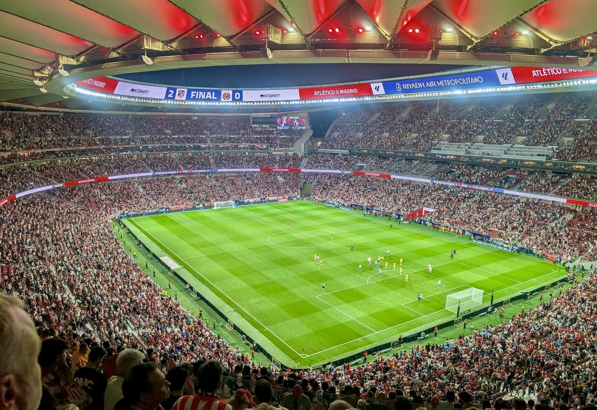
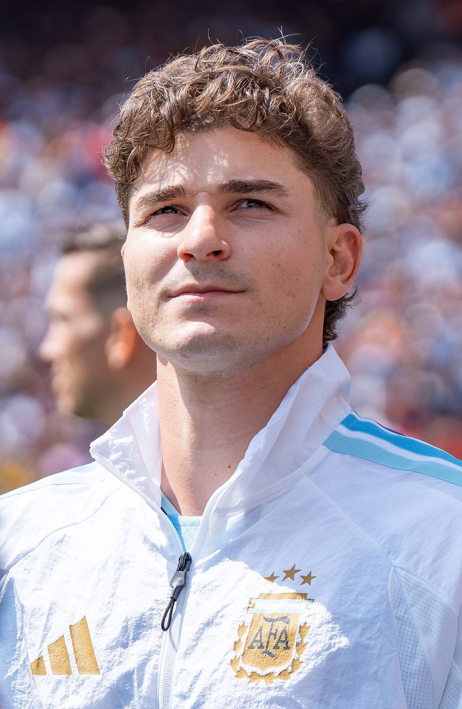
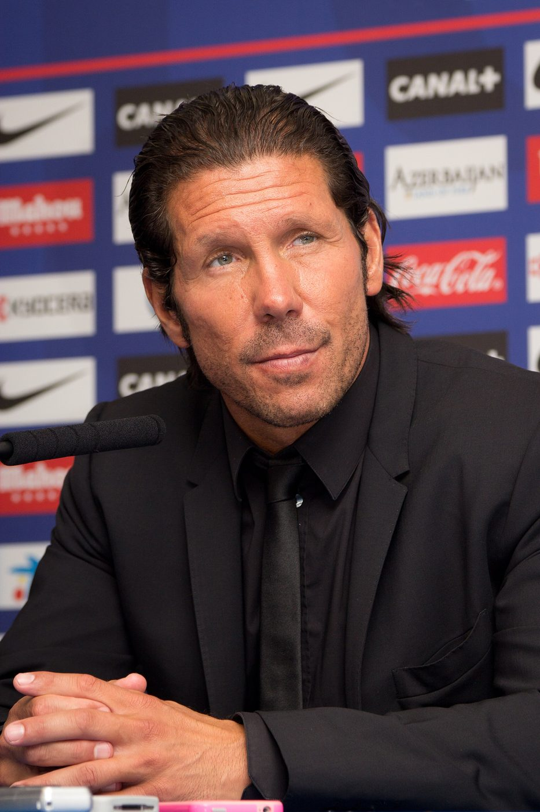

Madrid calling
Atlético Madrid at home is one of the sternest examinations in European football. It is also exactly the sort of night that made Manchester United famous.
Some away trips are a day out. A visit to Atlético Madrid is a test of character. Diego Simeone's team are famous for being horrible to play against: they defend in a tight, snarling block, they chase every loose ball as if it owes them money, and their stadium, roaring with around 70,000 people, turns into a cauldron. Simeone has been in charge since 2011, which means he has been making life miserable for opponents for longer than most of you have been alive.


So why are we feeling quietly optimistic? Read on.
What time is kick-off for me?
The story so farTwo very different starts
This is matchday two of the Champions League "league phase". There are 36 teams in one giant table; everybody plays eight games, and the top eight go straight through to the last 16. United began with a statement: a 4–0 win over Sabah of Azerbaijan at Old Trafford, with Bruno Fernandes, Matheus Cunha, Lisandro Martínez and Benjamin Šeško all on the scoresheet. It was United's first Champions League match since 2023–24, and they looked thrilled to be back.
Atlético's opener went the other way. They took an early lead at Anfield through Marcos Llorente, then lost 2–1 to Liverpool after goals from Dominik Szoboszlai and Alexis Mac Allister. In La Liga, though, they've been formidable. On Saturday they won 2–1 at Alavés, with Alejandro Grimaldo scoring and substitute Carlos Romero grabbing the winner three minutes from time, and they're second in the table, behind only an unstoppable Barcelona.
| Category | Atlético | Man Utd | |
|---|---|---|---|
| 1 | Champions League so far | L 1–2 at Liverpool | W 4–0 v Sabah |
| 2 | League position | 2nd in La Liga | 12th in Premier League |
| 3 | Manager | Diego Simeone (since 2011) | Michael Carrick |
| 4 | Last weekend | W 2–1 at Alavés | D 1–1 v Spurs |
| 5 | Main danger | Julián Álvarez | Bryan Mbeumo |
| 6 | Last meeting | Man Utd 2–1 Atlético (friendly, Stockholm, 1 Aug 2026) | |
Know your enemyThe men to watch

.jpg){kind=link}
Julián Álvarez is the Argentine forward who seems to be everywhere at once. He presses defenders, drops deep to collect the ball, and finishes with either foot. Marcos Llorente is the sort of player every manager wants: he can play in midfield or at full-back, he never stops running, and he scored Atlético's goal at Anfield. Behind them, Simeone's defence is drilled to make every match attritional. Expect a slow, tense, chess-like evening.
Key battle: Martínez v Álvarez
Two Argentines, one patch of grass. Lisandro Martínez is not the tallest centre-back in the world, but he is one of the bravest. He tackles hard, reads the game early and, as he showed against Sabah, can chip in with goals. If he can keep Álvarez quiet, United will have every chance.
History lessonUnfinished business


The last time these two met in a competitive match was the Champions League last 16 in 2022. It finished 1–1 in Madrid, with Anthony Elanga scoring a late equaliser, but Atlético won the second leg 1–0 at Old Trafford with a header from Renan Lodi. United went out. It's fair to say a few people at Old Trafford have not forgotten.
The more recent evidence is cheerier. In August, the teams played a pre-season friendly in Stockholm, and Bryan Mbeumo scored twice in a 2–1 United win. Friendlies don't count for points, of course. But they do count for confidence.
Touchline prediction
Atlético will make it ugly. United will need patience, a bit of luck and one moment of quality. We think they'll find it: an audacious away win to quieten the Metropolitano.
Atlético 1–2 Man Utd. (We are aware this may be our heart talking.)